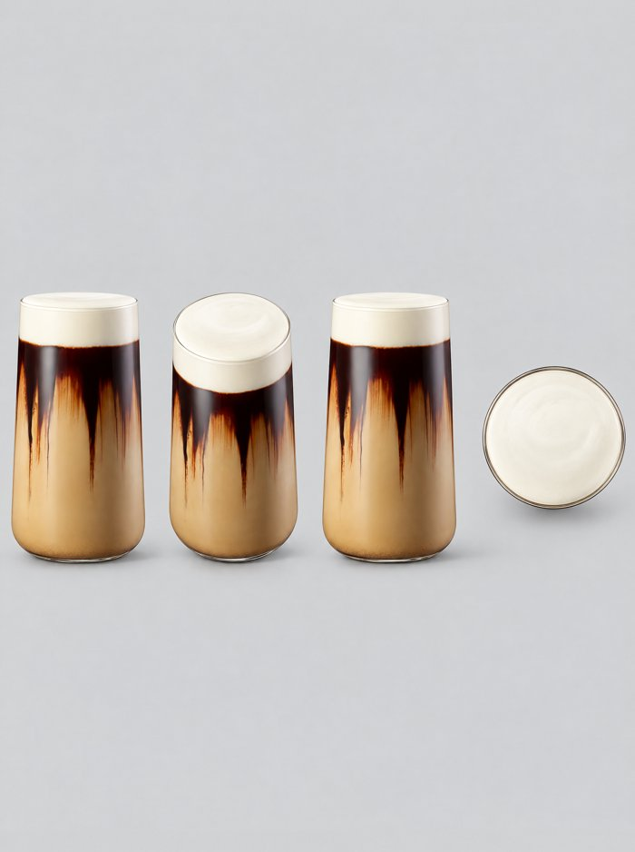
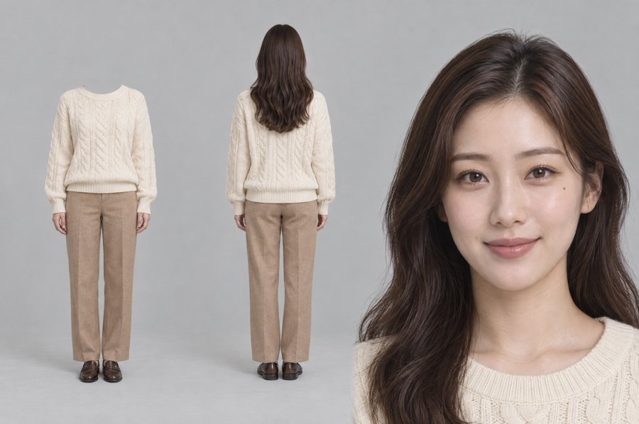
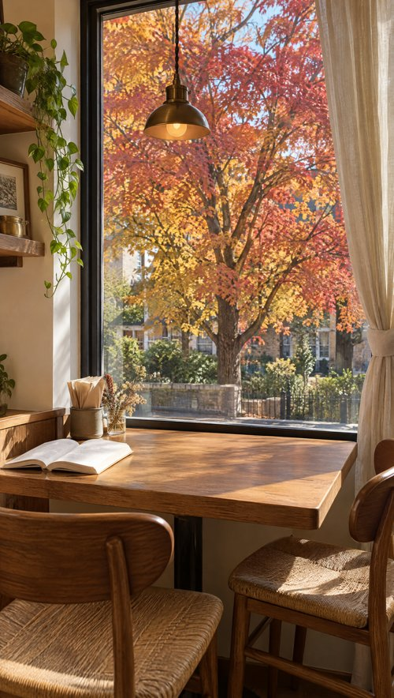

옵션 3 · 시험 1
마지막 갱신 2026-10-19 오후 · 투썸 · 오아 · 나디아
같은 의뢰서 세 건을 지금 엔진으로 처음부터 다시 만들어, 예전 방식으로 만든 판과 나란히 비교합니다. 납품이 아니라 엔진이 실제로 나아졌는지 재는 시험입니다. 통과하면 이 상태를 라이브러리 R2로 얼립니다.
지금 단계 · 투썸 완료(53.25cr) — 생성 후 검토 6개 중 4개 통과 · Dan 판정 대기 · 오아·나디아는 대기
오아 — 엔진 실행기 첫 자동 실행(의뢰서부터 · Head 손 없음)
엔진이 혼자 정한 것
아이디어 「이 작은 게 되겠어?」 → 대는 순간 시원함으로 반전(크기 역전)
연출 결 빠른 B급 컷 · 따뜻한 실내광 · 제품 매크로
정점 5~10초 — 작은 본체가 목에 닿자 표정이 녹고 잔머리·셔츠가 진동에 떨림
시간 설계 25분(13:40~14:06) · 그림 14:11 · 영상 14:19
후반 · 생성 후 검토 진행 중 — 끝나면 채움
투썸 결과 — 시험 1 첫 완성(v2)
이전 판 · 예전 방식 v5(10-15 납품)
생성에 넣은 참조 3장(GPT Image 2.5 Sunburst 2k)
Image 1 · 제품 여러 방향 시트
실물과 블라인드 대조 — 사용 가능
Image 2 · 인물 3면도(스튜디오)
Image 3 · 장소 사진
| 생성 후 검토(지시문 모르는 에이전트) | 판정 | 내용 |
|---|
| 제품 충실도 | ○ | 잔 3층·무늬 없는 유리가 처음부터 끝까지 실물과 같음 — 제품 여러 방향 시트 효과 |
| 훅 | ○ | 멈칫한 스푼 접사 → 2초에 돌풍으로 넘어가는 낙차 · 첫 2초 안 움직임은 작음 |
| 몰입 | △ | 정점 돌풍이 가장 길고 셈 · 9.5~11.5초 구도·자세가 그대로라 밋밋 |
| 브랜드 | ○ | 로고·표기·고유색 공식과 같음 · 검수자가 문구 색(공식은 노랑·흰)을 걸었으나 Dan 기준(자막 색·서체는 우리가)으로 유지 — 밝은 창턱이라 짙은 글자 |
| 의도 | ✕ | 9~12초 「케이크↔폼 왕복」이 안 나옴(크림 한 점만, 케이크 그대로) · 마지막 컷 손이 잔을 쥔 듯 |
| 흠 | ✕ | 정점 와이드에서 방이 다시 지어짐(선반·의자·창 바뀜) · 마지막 컷 창밖 단풍나무가 사라짐(장소 바뀜) · 큰 잎이 스티커처럼 납작 · 11.85초 손가락 뭉침 |
크레딧: 그림 3장 8.25cr + 영상 45cr = 53.25cr · 후반 관문 통과(음량 -14.3 LUFS) · 다시 뽑지 않고 Dan 판정 대기(버튼 한 번 = 생성 한 번) · 교훈은 OPTION3_LESSONS.md 10-19 투썸 시험 1
진행 단계
- ① 조사·포지셔닝특장점 1순위 · 장단점 가름통과 3/3
- ② 아이디어·구간 표사건 하나 · 정점 하나통과 3/3
- ③ 프롬프트네 덩어리 · 연출은 엔진통과 3/3
- ④ 생성 전 검토5관점 · 지시문 모르는 에이전트r2 통과 3/3
- ⑤ 그림 10장제품 시트 3·3면도 4·장소 3승인 대기
- ⑥ 그림 확인실물 블라인드 대조 · Dan 확인대기
- ⑦ 영상 3편시댄스 480p 드래프트대기
- ⑧ 검수·비교튐 검사 · 이전 판과 블라인드대기
엔진에서 바뀐 것
| 칸 | 예전(이전 판) | 지금(시험 1) |
|---|
| 포지셔닝 | 조사표에서 바로 아이디어 | 광고주 특장점을 1순위로 · 판매 페이지는 장점, 나머지는 조사로 장단점 · 이길 수 없는 비교는 피하고 다시 정의(reframe) · 관문이 막음 |
| 연출 | 컷마다 카메라·초를 우리가 지정 | v2 · 우리는 구간마다 일어나는 일·꼭 보일 것·느낌·소리만 · 컷·카메라·전환·연기는 시댄스 |
| 참조 그림 | 제품 사진 한 장 (+첫 장면 그림) | 인물 3면도 + 장소 사진 + 제품 여러 방향 시트 · 첫 장면 그림 없음 |
| 연출 결 | 없음(컷마다 지정하거나 전부 비움) | 우리가 라이브러리 근거로 결(여러 컷 몰입 / 적은 컷 고급 등)을 한두 문장으로 주문 · 컷별 카메라는 시댄스 · 관문이 근거 확인 |
| 이미지 엔진 | 구독 GPT | 힉스필드 GPT Image 2.5 Sunburst 2k |
| 라이브러리 | R1(10-10) 카드만 | R1 카드 + 이후 자료(포지셔닝 틀·끝까지 보게 하는 원리·AI 광고 장치) — 통과 뒤 R2로 묶음 |
생성 전 검토 r1 (15개 · 지시문 모르는 에이전트)
| 건 | 의도 | 구현 가능성 | 훅 | 몰입 | 브랜드 | 핵심 지적 |
|---|
| 투썸 | ✕ | ✕ | ✕ | ✕ | ○ | 「잔을 케이크로 착각」 자체가 약함 — 투명 잔이 음료로 먼저 읽힘 · 훅이 「띵」 소리 하나 · 정점 뒤 설명 동작·정지 3초 |
| 오아 | ✕ | ✕ | ✕ | ✕ | ✕ | 「쪼끄만 걸로?」 전에 제품이 안 보임 · 「얼굴 녹음」 정점은 1판에서 약했던 유형 · 로고가 손에 가려짐 · 타격음이 저소음 메시지와 어긋남 · 끝 2초 과밀 |
| 나디아 | ✕ | ✕ | ✕ | ✕ | ○ | 첫 2초 약함 · 비→햇빛 전환을 한 장면에 몰아넣음 · 정점 뒤 3초 조용 · 끝 장면 각도·누가 드는지 없음 |
검토 쪽 문제도 둘 찾아 고쳤습니다 — ① 카메라를 일부러 비운 것을 흠으로 셈 → 연출 결 칸으로 주문하고 검토에 「비운 것은 흠 아님」 명시 ② 근거 카드 칸이 비어 있었음. 지적 칸만 고치지 않고 세 건 모두 아이디어부터 다시 씁니다(r2).
r2 계획 — 생성 전 검토 통과 (의도 전달 · 알려진 실패 · 브랜드)
투썸 · 블랙 치즈폼 라떼
아이디어 아까워 못 깨던 매끈한 폼 캡을 결국 톡 깬 첫 한 숟갈 — 입에 닿는 순간 창이 활짝 열린 듯 가을 돌풍이 카페로 쏟아져 붉은 단풍잎이 온 공간을 휘감고, 그녀만 눈을 감고 고요히 음미한 뒤 같은 스푼으로 케이크와 폼을 오간다. 잎이 내려앉은 테이블에 잔과 케이크가 나란히
연출 결 여러 컷 몰입 — Get to the first spoonful fast and give the autumn gust the most time, the most scale and the most camera energy, then let it settle softly into a calm, pretty finish; warm golden maple backlight, creamy foam and glossy chocolate in crisp focus.
- 0–2초단풍 창가 테이블에서 그녀의 스푼이 매끈한 하얀 폼 캡 바로 위에서 멈칫하다 결국 톡 하고 캡을 깬다
- 2–9초 ★스푼이 두꺼운 폼을 한가득 떠 올려 입에 넣는 순간 창이 활짝 열린 듯한 가을 돌풍이 카페로 쏟아져 붉고 노란 단풍잎이 온 공간을 휘감는다 — 그녀만 눈을 감고 고요히 음미한다
- 9–12초공중에 멈춘 듯 떠 있는 단풍잎 사이에서 눈을 뜬 그녀가 같은 스푼으로 케이크를 한 입 뜨고 곧바로 다시 잔의 폼으로 스푼을 가져간다
- 12–15초잎이 사르르 테이블에 내려앉고 그녀가 스푼을 케이크 접시에 살짝 내려놓는다 — 스푼 자국 난 잔과 한 입 빈 케이크가 나란히 남는다
Image 1 · 제품 여러 방향 시트제품 여러 방향 시트 — 블랙 치즈폼 라떼 잔(정면·사선 위·측면·바로 위, 같은 축척 한 장)만들 그림
Image 2 · 인물 3면도인물 3면도 — 20대 한국 여성(얼굴·머리·옷만)만들 그림
Image 3 · 장소 사진장소 사진 — 단풍나무가 보이는 창가 원목 카페 테이블(공간·빛만 · 커튼·냅킨·펜던트 등 같은 바람에 반응할 것이 있는 자만들 그림
새 영상 · 승인 대기
오아 · 바디건
아이디어 「시~원하다」를 문자 그대로 — 밝은 흰 사무실, 자리에 앉은 거구가 두 팔로 거대한 회색 마사지건을 어깨에 얹은 채 옆에 선 작은 직장인 손의 바디건을 보고 「그 쪼끄만 걸로?」 비웃는다 → 그녀가 무표정하게 검은 폼 볼을 그의 반대쪽 어깨에 댄다 → 그 어깨에서 시원한 산바람 돌풍이 터져 사무실 서류가 눈보라처럼 날리고 그는 머리칼과 넥타이가 뒤로 날린 굳은 극락 얼굴로 「시~원하다…」(정점) → 돌풍이 가라앉자 머리가 다 넘어간 그가 다른 쪽 어깨를 내밀며
연출 결 여러 컷 몰입 — Get to the taunt fast, hold one still beat on the touch, and give the cool gale the most time, the most scale and the most camera energy; bright high-key daylight and a crisp, clean commercial texture.
- 0–3초자리에 앉은 거구가 두 팔로 거대한 회색 마사지건을 자기 어깨에 얹은 채 옆에 선 작은 직장인 손의 작은 바디건을 내려다보며 「그 쪼끄만 걸로?」 하고 비웃는다
- 3–5초작은 직장인이 무표정하게 바디건의 검은 폼 볼을 그의 반대쪽 어깨 위에 댄다
- 5–11초 ★닿은 어깨에서 꽁꽁 언 산골 폭포 앞 창문을 확 열어젖힌 듯한 차가운 산바람이 터져 사무실 전체를 휩쓸고 거구는 굳은 극락 얼굴로 「시~원하다…」 하고 내뱉는다
- 11–13초돌풍이 가라앉아 서류가 천천히 내려앉는 가운데 머리가 다 뒤로 넘어간 거구가 다른 쪽 어깨를 그녀에게 내밀며 「…이쪽도.」
- 13–15초그녀가 펼친 오른손 손바닥 위에 바디건을 세워 보이고 내레이션이 「오아 바디건.」
Image 1 · 제품 여러 방향 시트제품 여러 방향 시트 — 바디건 본체를 같은 축척으로 로고 면 옆(헤드 왼쪽)·로고 면 쪽 사선·정면(볼 정면)·윗면·바닥 버만들 그림
Image 2 · 인물 3면도작은 직장인 3면도 — 얼굴·머리·안경·옷만만들 그림
Image 3 · 인물 3면도거구 남자 3면도 — 얼굴·머리·턱수염·옷만만들 그림
Image 4 · 장소 사진장소 사진 — 밝은 흰 오픈 사무실(창 낮빛·책상 위 서류 더미·화분·오아 레드 포인트 벽 하나 · 사람 없음) · 공간·빛만만들 그림
새 영상 · 승인 대기
나디아 · 플라워 암막 우양산
아이디어 땡볕에 다들 손으로 눈을 가리는데 그녀만 꽃무늬 우산 그늘 속에서 정색하고 하늘을 본다 — 장대비가 쏟아지고 흠뻑 젖은 직장인이 그녀 우산 밑으로 뛰어든다 — 다시 해가 쨍하자 그는 젖은 신문지를 든 채 눈부셔 멈추고, 그녀는 한 번도 접지 않은 같은 우산으로 그대로 걸어간다
연출 결 적은 컷 고급 — Get to the downpour fast, give the shared-umbrella moment under the printed canopy the most time and the closest, slow-motion camera, and keep everything else unhurried, elegant and few-cut; the weather changes only on hard cuts between shots; natural daylight, fine fabric and rain texture.
- 0–2초한낮 땡볕 횡단보도에서 주변 사람들은 손으로 눈 위를 가리고 서 있는데 그녀만 머리 위로 평평히 든 우산 그늘(검정 안쪽과 꽃무늬 가장자리) 속에서 정색한 얼굴로 하늘을 올려다본다
- 2–4초다음 순간 맑던 하늘이 한여름 스콜처럼 터져 굵은 빗방울이 아스팔트에서 무릎 높이로 튀어 오르고 사람들은 가방과 신문지로 머리를 가리며 흩어지는데 그녀는 같은 자세 그대로 서 있다
- 4–10초 ★흠뻑 젖은 직장인이 신문지를 머리에 인 채 그녀의 우산 밑으로 뛰어들어 바짝 붙고, 그녀는 정색한 채 우산을 그쪽으로 살짝 기울여 나눠 준다
- 10–13초다음 순간 해를 가리던 구름이 걷힌 한여름 오후처럼 다시 쨍한 햇빛이 나고 젖은 아스팔트에서 옅은 김이 오르는 가운데 그는 젖은 신문지를 든 채 눈부셔 찡그리며 멈춰 서고 그녀는 같은 우산을 편 채 그대로 걸어 나간다(뒤에서 본 꽃무늬 겉면)
- 13–15초그녀가 햇빛 속 횡단보도를 걸어가는 뒷모습, 어깨 뒤로 젖혀 든 우산의 겉면 전체가 보는 쪽을 향한다
Image 1 · 제품 여러 방향 시트제품 여러 방향 시트 — 우양산(펼친 정면 겉면·사선 겉면·옆 겉면·위 겉면 육각·아래에서 본 안쪽 검정·옆 안쪽 보더·대와 만들 그림
Image 2 · 인물 3면도인물 3면도(그녀) — 얼굴·머리·옷만있음
Image 3 · 인물 3면도인물 3면도(조연 직장인) — 얼굴이 정점에서 크게 보이므로 필수 · 얼굴·머리·옷만만들 그림
Image 4 · 장소 사진장소 사진 — 낮은 건물 사이 동네 횡단보도(공간 배치만 · 날씨와 빛은 구간대로)만들 그림
새 영상 · 승인 대기
r1 계획(폐기 · 비교용)
투썸플레이스 · 블랙 치즈폼 라떼
9:16 · 예쁜 감성 · 의뢰서 특장점 「깊은 커피·달콤한 초콜릿·크리미한 치즈폼」
이전 판 · 예전 방식 v5(10-15 납품)
생성 전 검토(10-19): 의도·훅·몰입·구현 가능성 걸림, 브랜드만 통과
시험 1 · v2 · r1 계획(검토 통과 못 해 다시 쓰는 중)
포지셔닝 다른 라떼와 맛으로는 비슷함 → 「케이크 옆에 놓일 때 완성되는 디저트 같은 가을 한 잔」으로 다시 정의
- 0–2초케이크 단면 같은 크림빛 층에 포크 끝이 닿는다
- 2–4초알고 보니 창가 테이블의 라떼 잔 · 그녀가 착각에 웃는다
- 4–9초 ★치즈폼을 케이크 크림처럼 한 숟갈 떠 맛보고 눈이 커진다
- 9–12초케이크 접시를 잔 옆으로 끌어와 나란히 놓는다
- 12–15초단풍 창빛 아래 잔과 케이크 · 끝 로고
Image 1 · 제품 시트정면 옆·45° 위·폼 윗면·손에 든 크기만들 그림
Image 2 · 인물 3면도20대 여성 · 크림 니트만들 그림
Image 3 · 장소단풍 보이는 창가 원목 테이블만들 그림
새 영상 · 아직
오아 · 바디건(미니 마사지건)
16:9 · 재밌는 B급 · 의뢰서 특장점 「작지만 진동이 강해 시원하다」
이전 판 · 예전 방식 마지막 판
생성 전 검토(10-19): 의도·훅·몰입·구현 가능성 걸림, 브랜드만 통과
시험 1 · v2 · r1 계획(검토 통과 못 해 다시 쓰는 중)
포지셔닝 「강하다」는 아직 증거가 약함 → 작은 크기는 손·가방으로 보여 주고, 「서랍 속 큰 마사지건 말고 가방 속 내 마사지건」
- 0–3초정오의 사무실 복도 끝과 끝, 두 사람이 결투하듯 마주 선다
- 3–5초거구가 비웃는다 「그 쪼끄만 걸로?」
- 5–10초 ★작은 직장인이 폼 볼을 어깨에 대자 험상궂던 얼굴이 아기처럼 녹는다 「어우야…」
- 10–13초거구와 동료들이 어깨를 내민 채 줄을 선다 「…나도 한 번만」
- 13–15초열린 케이스 홈에 쏙 · 「작다고 얕보지 마세요. 오아 바디건.」
Image 1 · 제품 시트로고 면·윗면·버튼 면·손 크기·헤드 4종·케이스만들 그림
Image 2 · 인물 3면도작은 여직원만들 그림
Image 3 · 인물 3면도거구 남자만들 그림
Image 4 · 장소밝은 흰 사무실 복도만들 그림
새 영상 · 아직
나디아 · 플라워 암막 우양산
4:5 · 예쁜 감성 · 의뢰서 특장점 「134g 가벼움으로 비 올 때도 맑을 때도」
이전 판 · v2b(10-18 · 제품 사진 한 장)
6초 뒤 무늬가 옅어짐 · 안쪽 살·손잡이를 엔진이 지어냄 · 반전 약함
시험 1 · v2 · r1 계획(검토 통과 못 해 다시 쓰는 중)
포지셔닝 무게 숫자로는 더 가벼운 경쟁 제품이 있음 → 「소나기에도 땡볕에도 내 차림이 그대로 — 머리 위 한 장까지 코디」
- 0–2초소나기에 처마 밑 사람들 발이 묶인 사이, 그녀가 접힌 모란 우산을 들어 보이며 웃는다
- 2–5초모란 우산을 펴고 빗속 횡단보도로 · 주변은 검정 무지 우산
- 5–10초 ★비가 뚝 그치고 땡볕 · 다들 허둥지둥 우산을 접는데 그녀만 같은 우산 그늘로 여유롭게
- 10–13초우산 그늘 아래 올려다보며 만족스럽게 웃는다
- 13–15초맑은 하늘 아래 펼친 모란 우산 · 끝 로고
Image 1 · 제품 시트펼친 겉·안쪽·옆 겉·옆 안·꼭지·접힘·케이스·손 크기만들 그림
Image 2 · 인물 3면도기존 시트 재사용있음
Image 3 · 장소카페 처마 있는 길모퉁이 횡단보도만들 그림
새 영상 · 아직
크레딧
| 항목 | 수량 | 예상 | 실제 | 상태 |
|---|
| 그림 (GPT Image 2.5 Sunburst 2k high) | 10장 | 약 28cr | — | 승인 대기 |
| 영상 (시댄스 2.5 · 480p 드래프트 · 15초) | 3편 | 135cr | — | 그림 확인 뒤 |
| 합계 | | 약 163cr | — | |
|---|